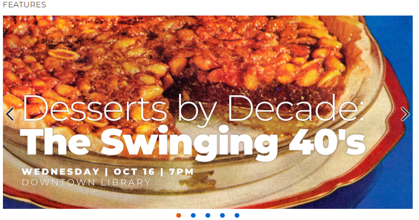

The concept of the five plains of Jesse James Garrett’s Elements of User Experience is a useful tool to analyze a website. This paper analyzes Ann Arbor District Library’s website using the five planes and the subdivisions of the website as a product for functionality and as a product for information.
The bottom plane of the Elements of User Experience is the strategy plan. This plane is concerned with the strategy of the website as it applies to the business goals and objectives for the organization that owns the website (Garrett, p. 36-38). Since this is the most abstract layer of the planes, I decided to look first in the About Us section of the website. There, I found Ann Arbor District Library’s (AADL) vision and mission statements, as well as their Strategic Plan 2016-2019.
For their vision statement, AADL provides “collections, programs, and leadership to promote the development of literate and informed citizens through open and equal access to cultural, intellectual, recreational, and information resources (“About Us”).” Their mission statement described them as being “committed to sustaining the value of public library services for the greater Ann Arbor community through the use of traditional and innovative technologies (“About Us”).” From both of these, I concluded that their website should functionally have a way to show what events they are having (which from an information standpoint should be numerous, culturally specific and varied) as well as clearly showing access to technologies that are “innovative.”
I deduced the same from their strategic plan, but more concretely. Regarding user needs, section 1.1 of the plan addresses better serving the senior population (“Strategic Plan 2016-2019”). Since that would involve offering events, those should be easily accessible and viewable in a senior-friendly way on the website. Section 1.4 addresses augmenting support of teen services. Again, that likely involves events, which means easy-to-access event look-up. Section 1.3 of the strategic plan addresses expanding offerings to support full equity and access across all cultures in the community. To me, this should become apparent in the website, such as offering the website in different languages, or having many events that address language barriers and supportive of cultural diversity. Regarding product objectives, section 4.3 of their strategic plan is to “implement the new web presence.” To do this, it says they “completed the new website information architecture and graphic design.” They will also migrate the catalog. They are also “developing new notification and alert system in conjunction with new website.” Additionally, 4.1 of their strategic plan addresses rebranding AADL, while 4.2 addresses AADL being an early adopter of technology “products and planning.”
To analyze the strategy plane further, I found some statistics that support this need. Per their Annual Report FY2018, last year the website had 12 million page views, and the library hosted 2,305 programs with 140,150 attendees. With this much usage, it makes sense that their strategic plan would include overhauling the website and making access much easier to a diverse audience.
The next plane is scope. The functional specifications of a website’s scope refers to what the system should do. This library website features a way to access information from the catalog using a search bar, and a way to see events, which is also searchable from the search bar. For the catalog, it has the ability to display information from the integrated library system database once queried. For events, it likely uses a content management system which pulls up featured events, events that are upcoming, lecture, and more.
The search itself also has two drop-downs specified – one for what category of thing you’re searching for (catalog, events, author, title), and a second to narrow down the material type. For any kind of search, the system must also have a way to display something when no results are found. To test this, I looked up Author for Books with the term “cannibal.” I got this search result.
Garrett describes some lack of functionality when null searches display “null input field exception” which is a database way of saying there wasn’t a hit (64). Thankfully, AADL thought of that functionality so users won’t be confused. Additionally, the website has a major need to have a way for users to log in to their account so they can check on holds, renew books, see what’s on their account, etc. This is a general expectation of a library website, and is included.
Other functional specifications include a way to access the databases the library subscribes to. There appears to also be cross-functionality with Michigan eLibrary Databases. There is also the functionality of being able to donate money to the library via the website. Last, there is some functionality required by way of documents such as PDFs linked on the website that when clicked can be accessed from their CMS or server. Garrett says, “Content requirements often have functional implications” (pp. 63). In looking at the content of the website, this appears to be true. Some of the content requirements for AADL’s website include:
Much of the content on AADL’s website is metadata content and much of it appears to pull from a content management system or their ILS, but there is still much content that is static to the website. For example, their strategic plan is available on the website, but also downloadable as a pdf. This adds to both information and functionality.
The next layer examines the structure of the website from an interaction design and information architecture standpoint.
Interaction Design involves user behavior and how the website responds to that behavior (p. 81.) For example, to facilitate the task of logging into their library account, the user must first find where the account log in button is. I think users at this point are used to a log in button or link being in the top right corner, and sure enough, that’s where AADL has the “sign in” link. The next user task of looking up an item in the catalog is also where I would expect it, at the top of the webpage, with a few drop downs to help the user have a successful search, then a place to type in a keyword. The magnifying glass to the right of this signifies in a universal way that the user is ready to initiate the search, and clicking it does just that.
Information Architecture is about what the system requires of the user in order for them to “make sense of the information presented” (p. 88). In the case of AADL, the content appears to be structured from the bottom up, meaning that there are categories and subcategories of content (the scope plane), and the functional requirements of the website start from there rather than from strategy. I know this because the website is organized foremost by content users would want to search for (not purely browse) such as searching the catalog, right at the top of the page. Then the features including events are below that, browsable in a carousel type of way, with some side links. Below that is the more agency specific type of content grouped together, like location and hours, strategic plans, vision statement, annual report, etc. Services are then grouped together, then there is an events calendar. Finally, there are multiple browsable type large clickable photos where collections are curated (“Especially For”, “Catalog”, “Community Collections”, “Explore Podcasts”). This is followed by reiterations of some of the content but at the bottom, where someone might also think to look first. The website architecture also includes “nodes” which can be seen in the URL when content is clicked and appears to be hierarchical.
The next layer is the skeleton layer. This layer has more concreteness to it, but is still a bit abstract. It involves interface design to analyze functionality, navigation design to analyze the product as information, and information design (which analyzes both function and information).
Regarding functionality, the interface design of AADL’s website is similar to many library websites in that users have the ability to search via a text field in combination with two drop down menus for materials (either hosted electronically such as e-books or e-audio, or seeing the surrogate record for the material physically located in the library) browse events, and have access to library organizational documentation. These are all the things users can do, and have contact and interaction with while visiting the website.
The navigation design of the website is also similar to many library websites in that the site provides users the ability to go to the places they need to go. For instance, users are quite familiar with the library search bar for searching the catalog, and entering in a key search term. Users are also familiar with clicking on “About Us” sections of websites, logging in by clicking the appropriate button or link at the top right, and seeing embedded calendars for events. Navigationally, AADL’s website is very familiar.
The Information design of the website refers to how ideas are communicated to the user, in both functional and informative ways. AADL’s website communicates it’s design in a very easy to understand, familiar way. By grouping the About Us, Collections, Events and Services sections in a bar, then another bar below that with large boxes for the two drop down menus and search bar with text field and magnifying glass button, it is easily communicated that the area to search is very important, and set off from the browsable (clickable) sections in the other. Additionally, having features with large photos that can be clicked through via dots at the bottom, the website communicates that they have many features of current events and highlights, and these are relevant and timely, as they take up a large amount of space right under the search area. To the right of this is more, as indicated by the menu-like list. The website also communicates a friendliness toward those who are seeking other information than searching the catalog or events by having a section below that with the About Us information grouped together in a box (indicating this is “other” information). The section right after that is for services. Next to this is an embedded events calendar, which easily communicates at a glance that events are an important part of the library, and there are many events – so many in fact that they keep a calendar!
The final, top layer of the Elements of User Experience is the surface layer. This is the most concrete layer, and refers to what the user sees that denotes function as well as information. For example, by grouping the About Us, Collections, Events and Services sections in a black bar with the font being white and smallish, then using a lighter color bar below that with large boxes for the two drop down menus and search bar, it is easily communicated that the area to search is where the user’s eye should go, and the contrast helps the user make this decision. Also, the About Us information is grouped together in a box with a blue background, setting it apart and drawing the eye. It is further down the page than the search box because it isn’t “as important” but still draws the eye of hopefully a user looking for that info. The section right after that is for services, and while also “other” it is different from what’s in the About Us section, as indicated by the reversed background and font color.
The website also has a font that is easy on the eyes, and there is a lot of contrast with the white background. Toward the bottom, the social media icons are all the same color blue as the blue box with the About Us information. This same blue is used elsewhere, and by limiting the colors used, it helps with cohesion. Last, using a grid type layout, the sensory design isn’t too busy or cluttered.
Using the five layers of the Elements of User Experience has been a helpful way to analyze the website. I found that the business strategy seems to be implemented well, with many culturally-specific events being displayed. The scope of the website seems very appropriate for a library website, with nothing seemingly beyond the scope of what I would expect a library website to do. The structure as well describes content I would expect, and is grouped in a logical, user-focused way that contributes to user tasks being conducted in a fluid manner. The skeleton is also what I would expect, if not better. I really enjoyed having two drop down menus to structure my search, as opposed to UNC Greensboro’s library website, where there is just a text field, then I narrow my search later. Narrowing it more up front, in a very easy-to-read and understand way was a nice surprise. Last, the surface layer shows a breadth of library content that I would expect from a public library, with access to search, ability to browse, many exciting events with pictures to entice me.  This pie for instance. Were this my local library, you bet I'd be there.
Overall, I found all of the elements of what I would expect in a library website to be present, pleasing, easy to use, easy on the eyes, functional, and informative. However, I realize that my analysis may be a bit biased since I’ve seen many library websites and I consider myself to be a very competent user. I would be interested in seeing the results of a usability test.
“About Us.” Ann Arbor District Library, aadl.org/about.
Garrett, J. J. (2010). The Elements of User Experience: User-Centered Design for the Web and Beyond (2nd edition). Berkeley, CA: New Riders.
“Strategic Plan 2016-2019.” Ann Arbor District Library, aadl.org/planning.